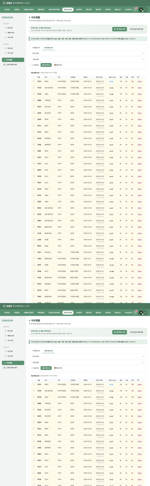
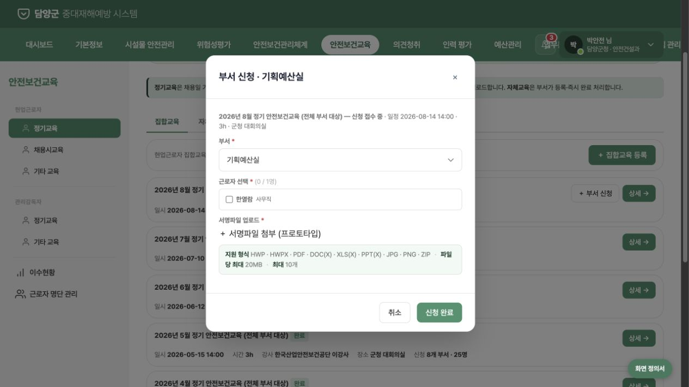
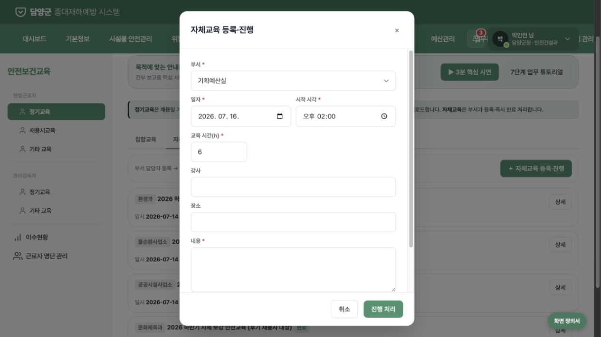

담양군 중대재해 통합관리 시스템 · 안전보건교육
현실성·최소 구현 검증
UI는 직관적이지만, 법정 기준 산정과 신청–출석–증빙–이수 확정 사이의 행정 상태가 부족합니다. 화면을 늘리기보다 핵심 통제 7개를 연결하는 방향이 적합합니다.
조건부 부적합
간부 시연 구조는 양호합니다. 다만 현재 완료율은 법정·감사 지표로 사용하기 어려우며, P0 항목 수정 후 시연해야 합니다.
한눈에 보는 검증 결과
메뉴 최소화와 설명성은 좋지만 실제 운영을 성립시키는 법정 산정, 출석 확인, 결과 증빙, 반기 조치가 부족합니다.
메뉴·정보구조
양호
간부 시연 직관성
양호
법정 기준 산정
치명적 보완
감사·증빙 가능성
치명적 보완
01
근로자 명단
주의02
법정 의무 산정
치명적03
교육 계획
주의04
대상자 신청
치명적05
출석·실시
누락06
이수 확정
치명적07
반기 점검·조치
누락핵심 발견 1 · 법정 산정 기준
개인별 채용일 기준 6개월 사이클은 재검토가 필요합니다
현재 구현은 근로자별 채용일을 시작점으로 6개월 구간과 D-day를 생성합니다. 이 값이 부서 완료율과 독촉 우선순위까지 결정합니다.
- 사무·판매직: 매반기 6시간
- 그 밖의 근로자: 매반기 12시간
- 관리감독자: 연간 16시간
현행 시행규칙 별표 4의 ‘매반기’ 기준과 현재 개인별 사이클의 관계를 담양군 노무·법률 담당자가 확정해야 합니다.

핵심 발견 2 · 신청과 실제 참석이 혼재
미래 교육 신청 단계에서 서명파일을 요구합니다
신청 명단과 실제 참석 서명부가 분리되지 않았습니다. 불참자와 부분 참석자를 기록할 수 없고, 교육 종료 시 신청자 전원이 이수 처리됩니다.
- 신청: 참여 예정자만 배정
- 실시 결과: 참석·불참·부분이수 확인
- 결과 확정: 참석자에게만 시간 반영

핵심 발견 3 · 등록 버튼이 이수 완료 버튼
자체·기타교육은 증빙 확인 전에 완료됩니다
자체교육과 특별·작업변경 교육은 폼 등록 즉시 완료·카운트됩니다. 강사 자격, 교육내용, 참석 서명, 교육일지를 확인하는 상태가 없습니다.
- 교육 계획과 실시 결과를 분리
- 강사 자격과 법정 교육내용 확인
- 교육일지·서명부·교재를 결과에 연결

현실적인 최소 프로토타입
화면을 크게 늘리지 않고 기존 메뉴 안에서 아래 상태만 연결하면 실제 행정 절차를 설명할 수 있습니다.
최소 7단계 운영 흐름
1
대상자 원장HR 1방향 연계 또는 엑셀 + 수기 예외
2
법정 의무 자동 산정반기·연간·채용·작업변경·특별교육
3
교육 계획과정·대상작업·내용·강사 자격
4
대상자 신청·배정참여 예정자만 지정
5
개인별 참석 결과참석·불참·부분이수와 증빙
6
이수 원장 확정참석자에게만 시간 반영, 정정 이력
7
반기 점검·조치통보 → 기한 → 조치 → 경영책임자 보고
간부 시연 전 P0
P0
정기교육 반기·연간 산정 기준 확정
P0
신청자와 실제 참석자 분리
P0
서명파일을 결과 확정 단계로 이동
P0
자체·기타교육의 등록 즉시 완료 제거
P0
특별·작업변경·채용교육별 법정 규칙 적용
P0
반기 점검·보고·미이행 조치 상태 추가
인사1방향 동기화·최근 성공·오류
권한중앙관리자·부서담당자 2역할
파일교육일지·서명부·교재 연결
알림발송시각·성공·실패·조치기한
보고반기 점검 결과·조치현황